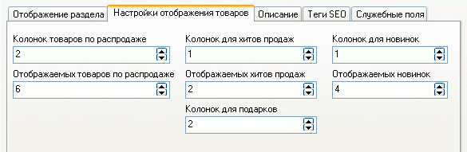

При создании нового магазина первая страница присутствует в нем автоматически, но в случае необходимости она может быть создана добавлением раздела с произвольным наименованием, а затем определением его типа как "Первая страница магазина" (см. типы разделов). В каждом магазине может быть только одна первая страница.
Первая страница имеет свои индивидуальные параметры настройки отображения и может содержать:
Общее число отображаемых на первой странице особых товаров и товаров со скидкой задается в закладке "Настройки раздела" и далее "Настройки отображения товаров".
"Хиты продаж" и "Товары по распродаже" выбираются и отображаются из всех товаров данных категорий случайным образом.

Варианты отображения "Перечня разделов" задаются на закладке "Отображение раздела" (см. Свойства разделов).
В закладке Служебные поля задается "Код раздела при обновлении" который позволяет однозначно идентифицировать отдел при обновлении сведений о товарах, даже в случае его перемещения в дереве разделов).
Варианты мест размещения и количества отображаемых новостей задаются в закладке "Дополнительно" главного окна при выборе пункта меню "Новостные блоки".
Варианты мест размещения и продолжительности отображения опросов и голосований задаются в закладке "Дополнительно" главного окна при выборе пункта меню "Опросы и голосования".